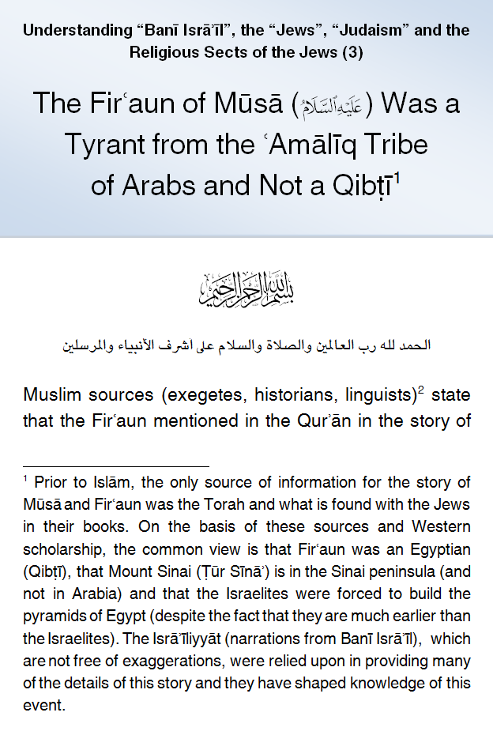
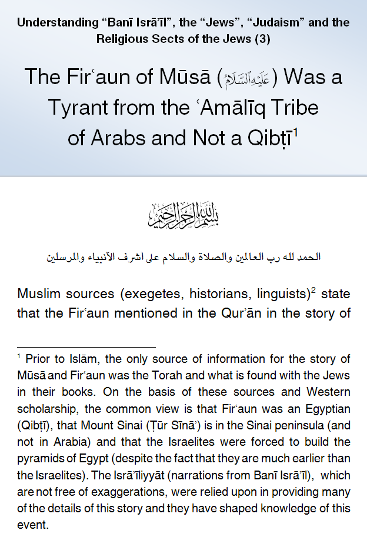

IslamMoses.Com
Posted by Abu Iyaad on Sunday, September, 23 2018 and filed under General
Key topics: Moses • Israelites • Children Of Israel • Judaism • Pharoah • Hyksos

|
IslamMoses.Com |
|
The Firʿaun of Mūsā Was a Tyrant from the ʿAmālīq Tribe of Arabs and Not an Egyptian King Posted by Abu Iyaad on Sunday, September, 23 2018 and filed under General Key topics: Moses • Israelites • Children Of Israel • Judaism • Pharoah • Hyksos 
|